07-SonarQube代码质量扫描工具
1.什么是SonarQube
既然是学习devops 运维流水线构建
开发
↓
测试
↓
运维
华为devops软件开发流水线文档
https://support.huaweicloud.com/reference-devcloud/devcloud_reference_040404.html
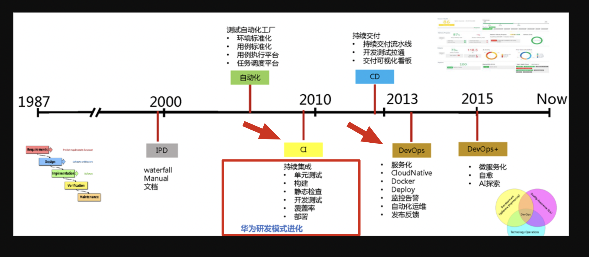
前面我们已经基本实现了，基于git+gitlab+jenkins实现了
代码推送到远程仓库
自动触发jenkins构建任务，结合shell脚本实现服务器配置更新
为了精益求精，再学下企业里进行自动化代码质量扫描的软件，SonarQube
https://zh.wikipedia.org/zh-cn/SonarQube
在公司的软件开发项目周期里，研发老大会关注代码的质量，确保尽可能少的bug后再上线；
但如果以人工检查如代码质量，框架漏洞，或者代码的算法，写法太垃圾。。
这是一个大工程，如果能借助一些自动化工具去扫描代码，就可以极大的减少code review（代码审查）的时间
因此SonarQube它来了。
2.SonarQube部署
2.1 mysql安装
https://downloads.mysql.com/archives/community/
https://downloads.mysql.com/archives/get/p/23/file/mysql-5.7.28-linux-glibc2.12-x86_64.tar.gz
1.创建目录且下载，解压缩
mkdir -p /www.yuchaoit.cn/soft
# 将mysql5.7的目录放置在/opt下
cd /www.yuchaoit.cn/soft/ && wget https://downloads.mysql.com/archives/get/p/23/file/mysql-5.7.28-linux-glibc2.12-x86_64.tar.gz && tar zxf mysql-5.7.28-linux-glibc2.12-x86_64.tar.gz -C /opt/
# 设置软连接
mv /opt/mysql-5.7.28-linux-glibc2.12-x86_64 /opt/mysql-5.7.28
ln -s /opt/mysql-5.7.28 /opt/mysql
# 检查
[root@jenkins-100 /opt]#ll
total 242268
-rw-r--r-- 1 root root 170023183 Jul 10 19:15 jdk-8u181-linux-x64.rpm
-rw-r--r-- 1 root root 78055160 Jul 10 19:15 jenkins-2.190.1-1.1.noarch.rpm
lrwxrwxrwx 1 root root 17 Jul 13 11:36 mysql -> /opt/mysql-5.7.28
drwxr-xr-x 9 root root 129 Jul 13 11:35 mysql-5.7.28
drwxr-xr-x 2 root root 6 Jul 11 06:23 plugins
# 创建数据库目录，待会使用
mkdir -p /www.yuchaoit.cn/mysql_3306/
2.设置环境变量
[root@jenkins-100 /opt]#echo 'export PATH=$PATH:/opt/mysql/bin' >>/etc/profile
[root@jenkins-100 /opt]#source /etc/profile
[root@jenkins-100 /opt]#mysql -V
mysql Ver 14.14 Distrib 5.7.28, for linux-glibc2.12 (x86_64) using EditLine wrapper
# 清除mariadb的依赖
rpm -qa|grep mariadb
yum remove mariadb-libs -y
rm -rf /etc/my.cnf
3.安装mysql5.7的依赖
yum install -y libaio-devel
4.创建mysql用户，授权数据目录
useradd -s /sbin/nologin -M mysql
chown -R mysql.mysql /www.yuchaoit.cn/
chown -R mysql.mysql /opt/mysql*
5.初始化数据库
[root@jenkins-100 /opt]#mysqld --initialize-insecure --user=mysql --basedir=/opt/mysql --datadir=/www.yuchaoit.cn/mysql_3306/
2022-07-13T04:03:35.115013Z 0 [Warning] TIMESTAMP with implicit DEFAULT value is deprecated. Please use --explicit_defaults_for_timestamp server option (see documentation for more details).
2022-07-13T04:03:35.290090Z 0 [Warning] InnoDB: New log files created, LSN=45790
2022-07-13T04:03:35.324794Z 0 [Warning] InnoDB: Creating foreign key constraint system tables.
2022-07-13T04:03:35.380019Z 0 [Warning] No existing UUID has been found, so we assume that this is the first time that this server has been started. Generating a new UUID: c46ac1d3-0260-11ed-9ad5-000c294710ac.
2022-07-13T04:03:35.380520Z 0 [Warning] Gtid table is not ready to be used. Table 'mysql.gtid_executed' cannot be opened.
2022-07-13T04:03:35.749798Z 0 [Warning] CA certificate ca.pem is self signed.
2022-07-13T04:03:35.857768Z 1 [Warning] root@localhost is created with an empty password ! Please consider switching off the --initialize-insecure option.
看到结尾的提示，默认mysql密码是空
6.创建自定义的mysql配置文件
cat> /etc/my.cnf <<'EOF'
[mysqld]
user=mysql
basedir=/opt/mysql
datadir=/www.yuchaoit.cn/mysql_3306
socket=/tmp/mysql.sock
[mysql]
socket=/tmp/mysql.sock
EOF
7.设置启动mysql的脚本
[root@jenkins-100 /opt]#
[root@jenkins-100 /opt]#cp /opt/mysql/support-files/mysql.server /etc/init.d/mysqld
[root@jenkins-100 /opt]#chkconfig --add mysqld
[root@jenkins-100 /opt]#systemctl start mysqld
[root@jenkins-100 /opt]#netstat -lntup|grep 3306
tcp6 0 0 :::3306 :::* LISTEN 102661/mysqld
8.如果要是前台启动mysql，可以用如下的完整命令(通过ps命令可见)
[root@jenkins-100 /opt]#/opt/mysql/bin/mysqld --basedir=/opt/mysql --datadir=/www.yuchaoit.cn/mysql_3306 --plugin-dir=/opt/mysql/lib/plugin --user=mysql --log-error=/www.yuchaoit.cn/mysql_3306/log/mysql.log --pid-file=/www.yuchaoit.cn/mysql_3306/db01.pid --socket=/tmp/mysql.sock
9.修改mysql密码
mysqladmin password www.yuchaoit.cn
10.测试登录
[root@jenkins-100 /opt]#mysql -uroot -p'www.yuchaoit.cn' -e 'select version();'
mysql: [Warning] Using a password on the command line interface can be insecure.
+-----------+
| version() |
+-----------+
| 5.7.28 |
+-----------+
3.安装SonarQube
1.下载软件包，没有从超哥要
[root@jenkins-100 /opt]#ls so*
sonar_plugins.tar.gz sonarqube-7.0.zip sonar-scanner-cli-4.0.0.1744-linux.zip
2.安装java环境，因为sonarqube是java开发的
yum install java -y
3.解压缩SonarQube主程序
[root@jenkins-100 /opt]#unzip sonarqube-7.0.zip -d /opt/
[root@jenkins-100 /opt]#ln -s /opt/sonarqube-7.0/ /opt/sonarqube
4.创建普通用户，授权
[root@jenkins-100 /opt]#useradd sonar -M -s /sbin/nologin
[root@jenkins-100 /opt]#chown -R sonar.sonar /opt/sonarqube*
5.配置sonnaqube连接mysql参数
cp /opt/sonarqube/conf/sonar.properties{,.bak}
cat > /opt/sonarqube/conf/sonar.properties << 'EOF'
sonar.jdbc.username=root
sonar.jdbc.password=www.yuchaoit.cn
sonar.jdbc.url=jdbc:mysql://localhost:3306/sonar?useUnicode=true&characterEncoding=utf8&rewriteBatchedStatements=true&useConfigs=maxPerformance&useSSL=false
EOF
6.修改sonarqube启动脚本，指定运行用户
[root@jenkins-100 /opt]#grep '^RUN_AS' /opt/sonarqube/bin/linux-x86-64/sonar.sh
RUN_AS_USER=sonar
7.创建sonarqube数据库
[root@jenkins-100 /opt]#mysql -uroot -pwww.yuchaoit.cn -e 'create database sonar default character set utf8;'
mysql: [Warning] Using a password on the command line interface can be insecure.
[root@jenkins-100 /opt]#mysql -uroot -pwww.yuchaoit.cn -e 'show databases;'
mysql: [Warning] Using a password on the command line interface can be insecure.
+--------------------+
| Database |
+--------------------+
| information_schema |
| log |
| mysql |
| performance_schema |
| sonar |
| sys |
+--------------------+
8.创建sonarqube服务管理脚本，用systemctl去管理
cat >/usr/lib/systemd/system/sonar.service<<'EOF'
[Unit]
Description=sonar
[Service]
ExecStart=/opt/sonarqube/bin/linux-x86-64/sonar.sh start
ExecStop=/opt/sonarqube/bin/linux-x86-64/sonar.sh stop
Type=forking
User=sonar
Group=sonar
[Install]
WantedBy=multi-user.target
EOF
systemctl daemon-reload
systemctl start sonar
systemctl status sonar
[root@jenkins-100 ~]#systemctl enable sonar
Created symlink from /etc/systemd/system/multi-user.target.wants/sonar.service to /usr/lib/systemd/system/sonar.service.
9.检查服务
[root@jenkins-100 /opt]#netstat -tunlp|grep java
tcp 0 0 127.0.0.1:32000 0.0.0.0:* LISTEN 104899/java
tcp6 0 0 127.0.0.1:38439 :::* LISTEN 105219/java
tcp6 0 0 :::9000 :::* LISTEN 105022/java
tcp6 0 0 127.0.0.1:9001 :::* LISTEN 104924/java
tcp6 0 0 :::8080 :::* LISTEN 17763/java
tcp6 0 0 :::45781 :::* LISTEN 17763/java
udp6 0 0 :::33848 :::* 17763/java
udp6 0 0 :::5353 :::* 17763/java
10.如果报错，可以去查看sonar的日志
[root@jenkins-100 /opt]#ls /opt/sonarqube/logs/
access.log ce.log es.log sonar.log web.log
=================================================================
如下操作和部署无关，java程序运行需要较多内核资源，可能要进行调整
查看内核参数
[root@jenkins-100 /opt]#sysctl -a |grep max_map
sysctl: reading key "net.ipv6.conf.all.stable_secret"
sysctl: reading key "net.ipv6.conf.default.stable_secret"
sysctl: reading key "net.ipv6.conf.ens33.stable_secret"
sysctl: reading key "net.ipv6.conf.ens37.stable_secret"
sysctl: reading key "net.ipv6.conf.lo.stable_secret"
vm.max_map_count = 65530
修改内核参数
echo "vm.max_map_count=262144" >> /etc/sysctl.conf
echo "root - nofile 65536" >> /etc/security/limits.conf
echo "sonar - nofile 65536" >> /etc/security/limits.conf
sysctl -p
4.初始化SonarQube
4.1 登录
http://10.0.0.100:9000/
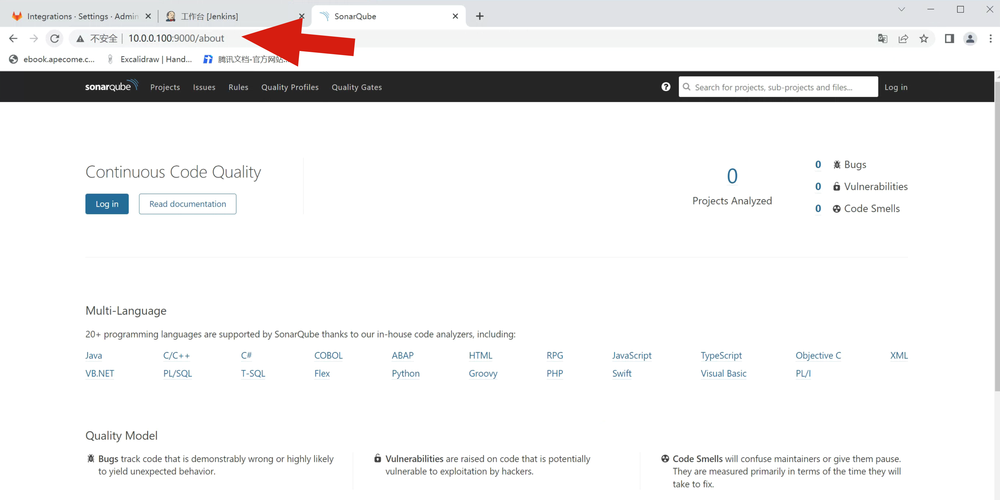
默认账密
admin
admin
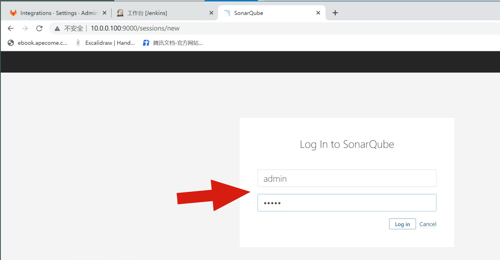
4.2 生成token
在输入框内输入jenkins，然后点击Generate生成token，需要保存好这个tocken，后面会用到
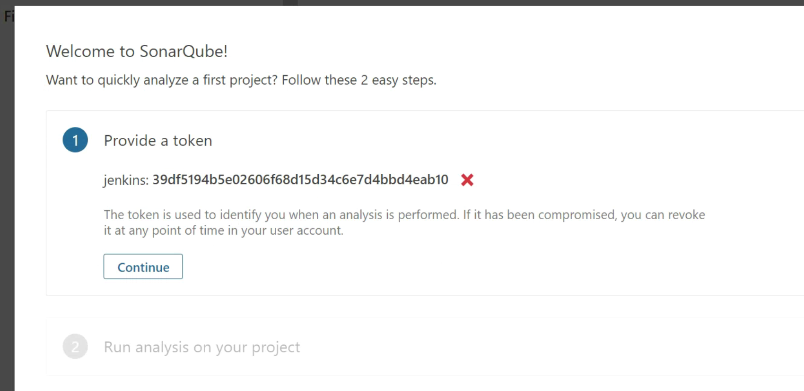
token就是一串字符串数据，用于身份校验
输入jenkins，点击生成token
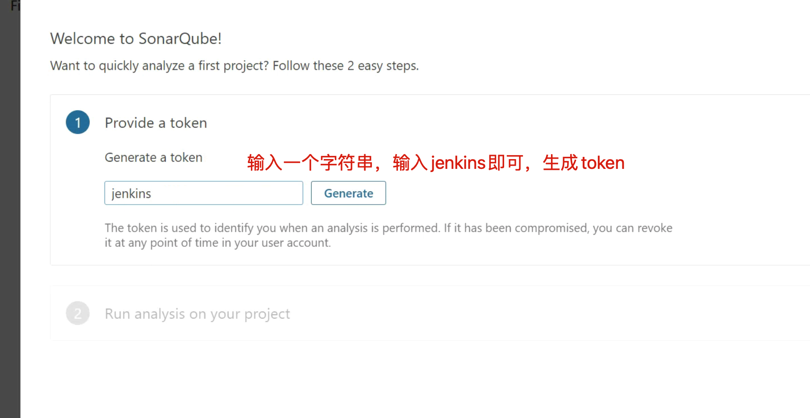
jenkins: 39df5194b5e02606f68d15d34c6e7d4bbd4eab10
4.3 选择项目类型(开发语言)
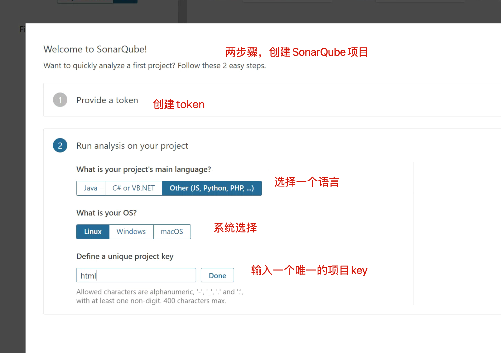
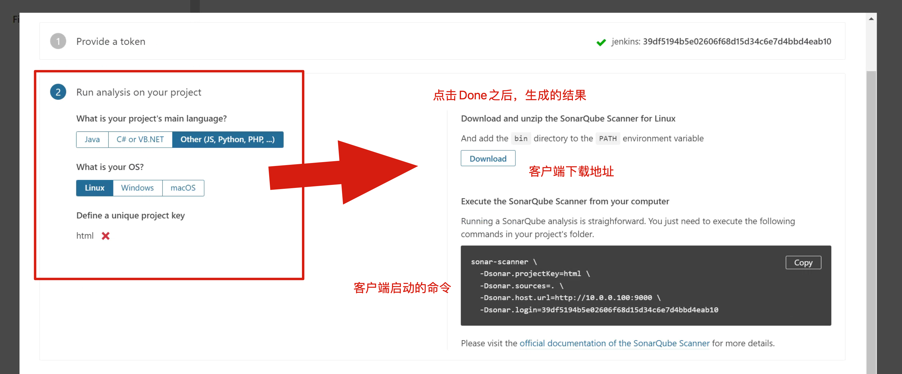
保存客户端启动命令
sonar-scanner \
-Dsonar.projectKey=html \
-Dsonar.sources=. \
-Dsonar.host.url=http://10.0.0.100:9000 \
-Dsonar.login=39df5194b5e02606f68d15d34c6e7d4bbd4eab10
5.安装SonarQube中文插件
目前已有的一个检测项目（名字是 html）
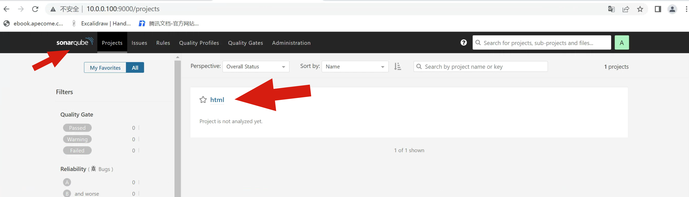
安装中文插件
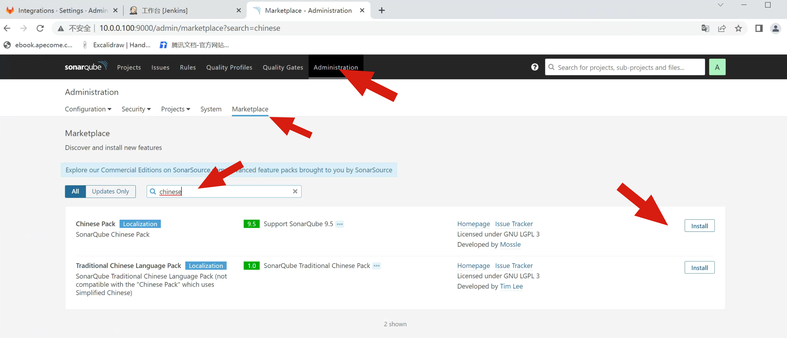
遗憾貌似装不了，采用离线安装吧
https://docs.sonarqube.org/latest/analysis/languages/
5.1 导入于超老师准备的插件
解压缩插件
备份原有插件目录
[root@jenkins-100 /opt]#mv /opt/sonarqube/extensions/plugins/ /opt/sonarqube/extensions/plugins_bak
[root@jenkins-100 /opt]#tar xf sonar_plugins.tar.gz -C /opt/sonarqube/extensions/
[root@jenkins-100 /opt]#ls /opt/sonarqube/extensions/
downloads jdbc-driver plugins plugins_bak
[root@jenkins-100 /opt]#ls /opt/sonarqube/extensions/plugins
重启服务
[root@jenkins-100 /opt]#systemctl restart sonar.service
再次访问
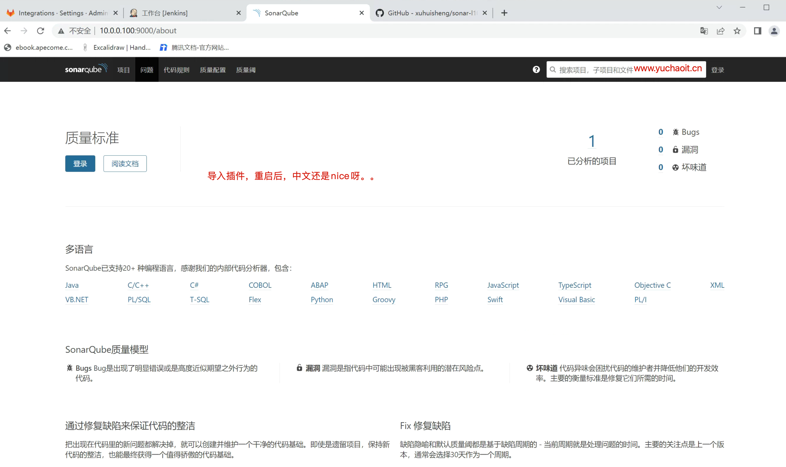
6.安装客户端
架构图
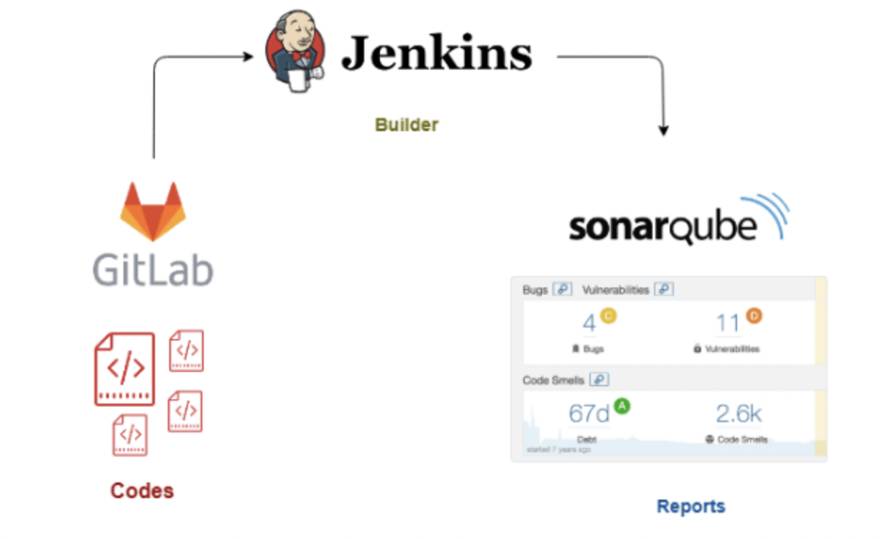
sonar-scanner 是专门用于代码检测的命令工具
1.jenkins机器，安装sonarqube客户端
我们需要将拉取的gitlab代码交给sonarqube，因此jenkins作为一个客户端，推送数据
[root@jenkins-100 /opt]#unzip sonar-scanner-cli-4.0.0.1744-linux.zip -d /opt
[root@jenkins-100 /opt]#ln -s /opt/sonar-scanner-4.0.0.1744-linux/ sonar-scanner
2. 加入环境变量
echo 'export PATH=$PATH:/opt/sonar-scanner/bin' >> /etc/profile
source /etc/profile
3.推送代码到SonarQube，注意是于超老师在创建Sonarqube项目html时，生成的token，换成你自己的就好
# 参数解释
项目名 html
代码目录 .
sonar地址
token值
# 具体命令
sonar-scanner \
-Dsonar.projectKey=html \
-Dsonar.sources=. \
-Dsonar.host.url=http://10.0.0.100:9000 \
-Dsonar.login=39df5194b5e02606f68d15d34c6e7d4bbd4eab10
4.进入到于超老师讲解的jenkins章节，工作区目录，里面有用于测试的html代码
[root@jenkins-100 /opt]#cd /var/lib/jenkins/workspace/yuchao_monitor
[root@jenkins-100 /var/lib/jenkins/workspace/yuchao_monitor]#
# 执行即可
sonar-scanner \
-Dsonar.projectKey=html \
-Dsonar.sources=. \
-Dsonar.host.url=http://10.0.0.100:9000 \
-Dsonar.login=39df5194b5e02606f68d15d34c6e7d4bbd4eab10
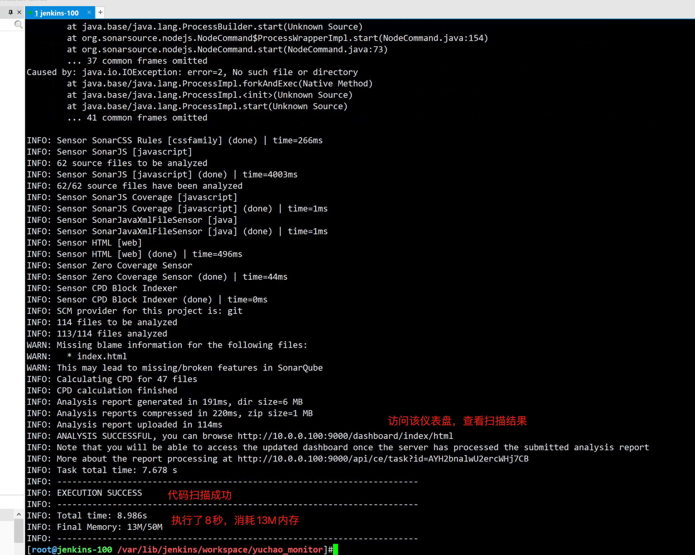
6.1 代码扫描结果
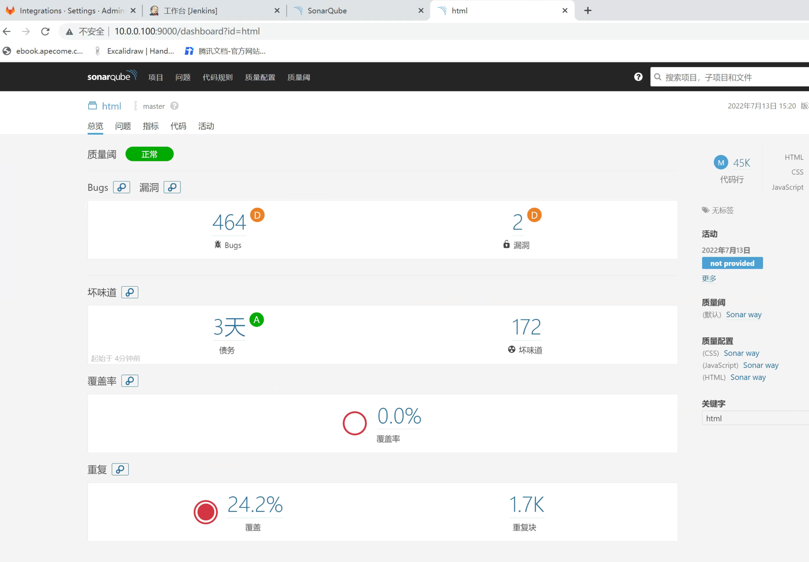
6.2 解决报错
ERROR: Error when running: 'node -v'. Is Node.js available during analysis? No CSS files will be analyzed.
org.sonarsource.nodejs.NodeCommandException: Error when running: 'node -v'. Is Node.js available during analysis?
at org.sonarsource.nodejs.NodeCommand.start(NodeCommand.java:77)
解决
解决方法：在jenkins服务器上安装nodejs环境,然后重新推送就不会再报错了：
cat > install_node12-13.sh <<'EOF'
cd /opt/
wget https://nodejs.org/dist/v12.13.0/node-v12.13.0-linux-x64.tar.xz
tar xf node-v12.13.0-linux-x64.tar.xz
mv node-v12.13.0-linux-x64 node
echo 'export PATH=$PATH:/opt/node/bin' >> /etc/profile
source /etc/profile
npm -v
node -v
EOF
结果
6.12.0
v12.13.0
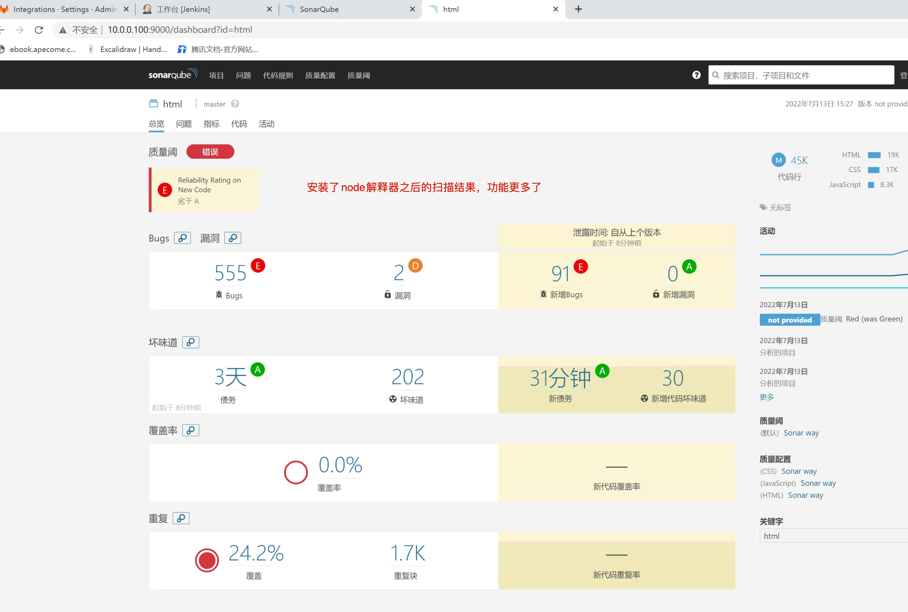
6.3 测测其他代码试试
简单玩下试试就行，要检测更多其他复杂源码，需要安装插件，做更多学习。
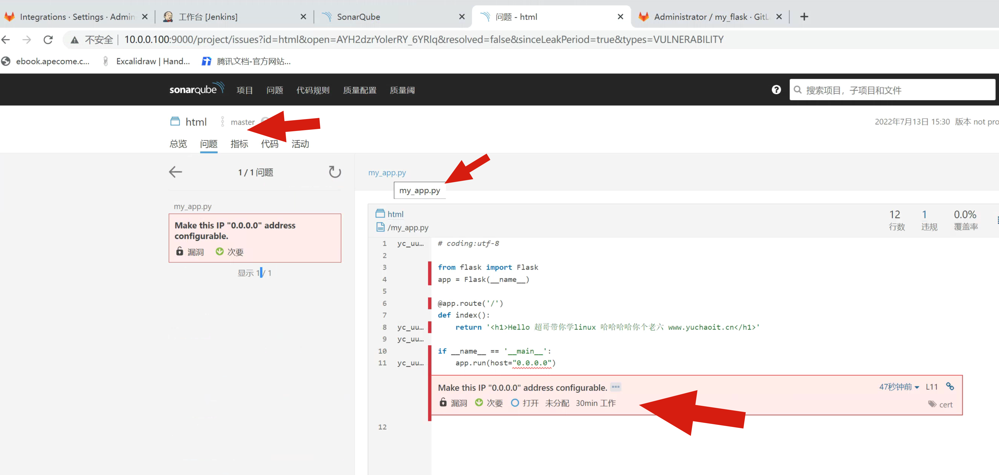
7.SonarQube集成jenkins
7.1 jenkins里添加SonarQube的凭证
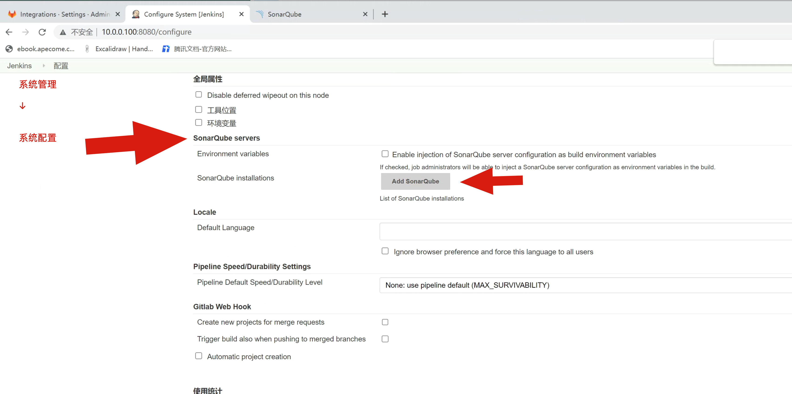
先保存sonar设置，然后再添加sonar凭证
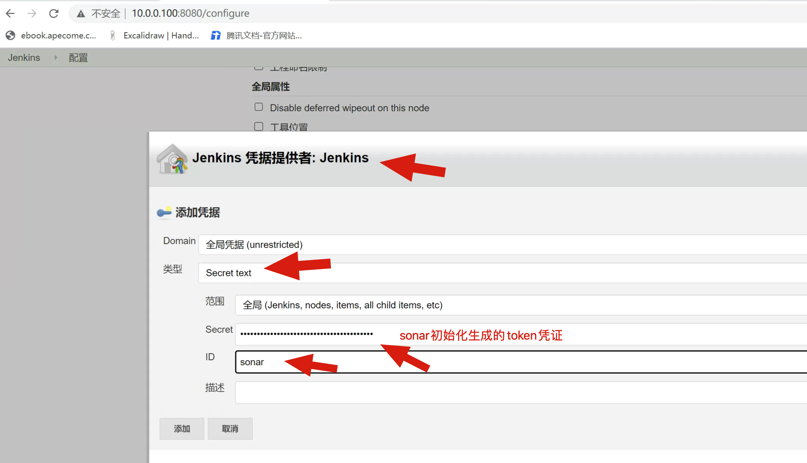
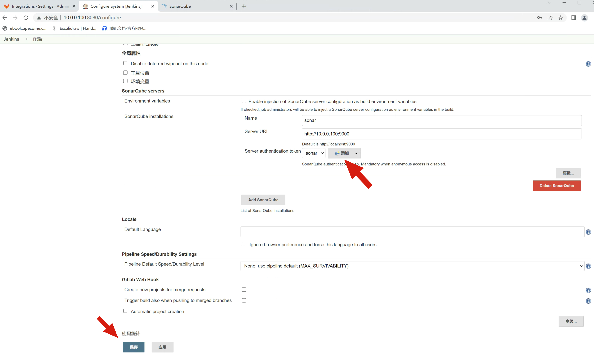
7.2 添加Sonar客户端的家目录
也就是代码检测的目录，待会要和jenkins的工作区对应上。
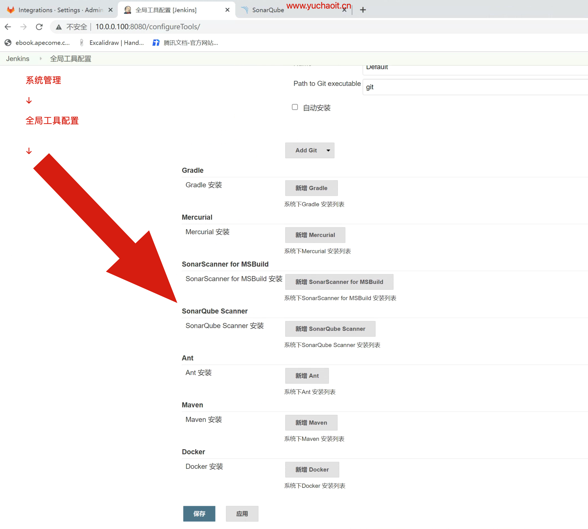
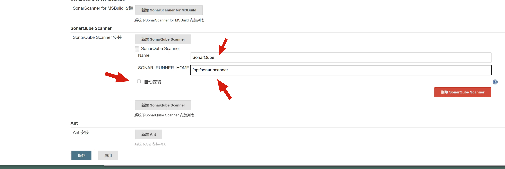
7.3 给job添加sonar构建动作
构建的同时进行代码扫描
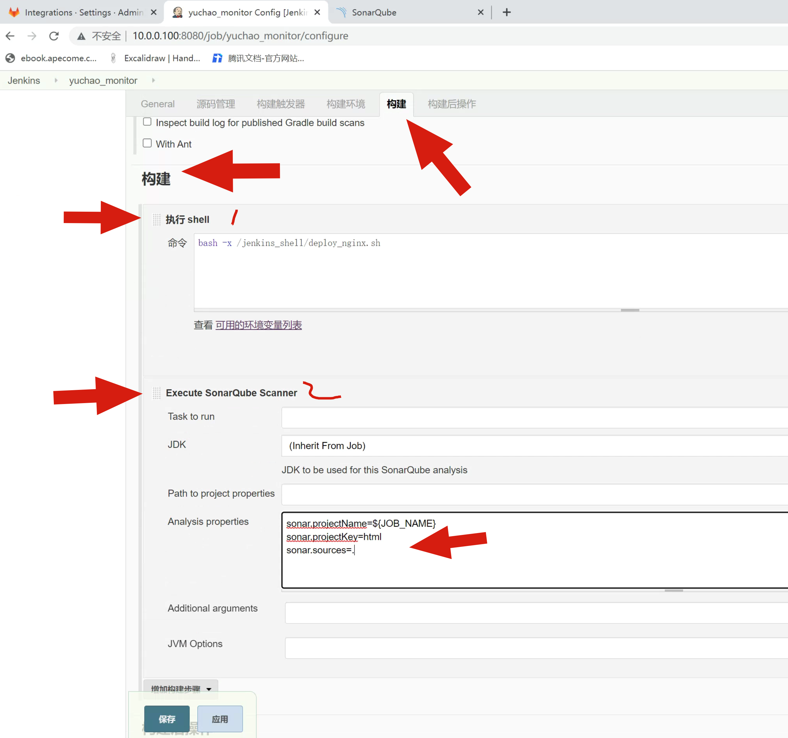
也就是添加三个sonar执行的参数，确保sonnar的命令是在代码目录下执行
sonar.projectName=${JOB_NAME}
sonar.projectKey=html
sonar.sources=.
7.4 最后注意细节
软件开发流程是
开发、测试、运维上线。
调整jenkins的devops流程构建步骤。
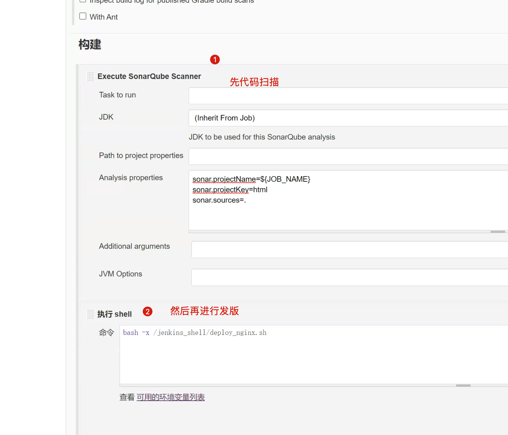
8.最终测试
1. 开发推送代码，触发gitlab的webhook，执行jenkins任务
2. 构建动作里，先sonnar代码扫描，然后进行脚本发布
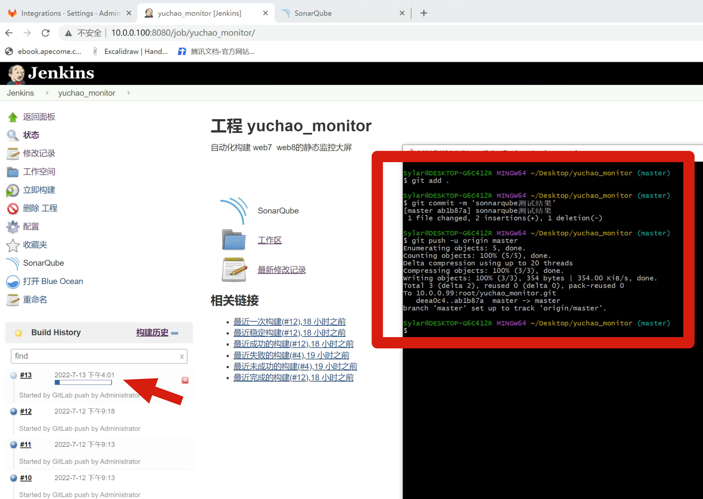
检查sonarqube
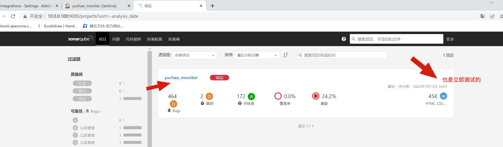
检查部署结果
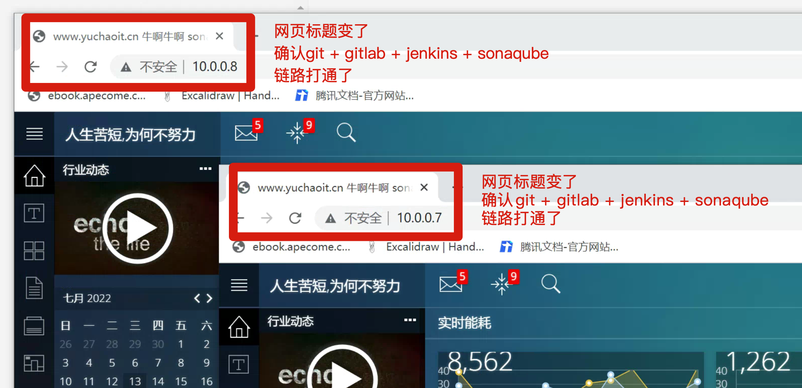